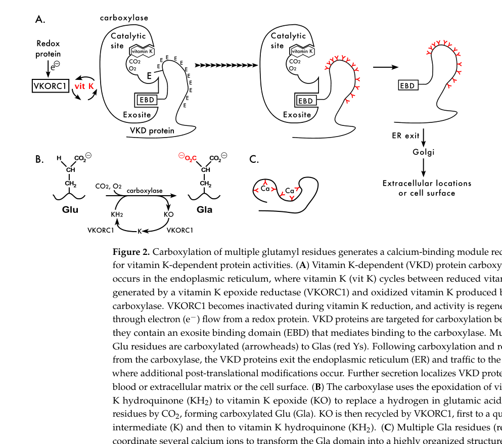

1. Disease Information
1.1 What is the disease?
Hereditary combined vitamin K–dependent clotting factors deficiency (VKCFD) is a rare congenital bleeding disorder characterized by variably decreased activities of vitamin K–dependent clotting factors II, VII, IX, and X, plus reduced natural anticoagulants protein C, protein S, and protein Z, due to defective vitamin K–dependent γ-carboxylation. (napolitano2010hereditarycombineddeficiency pages 1-2)
A more recent narrative review similarly defines inherited VKCFD as an autosomal recessive genetic disease with impaired levels of multiple coagulation factors (II, VII, IX, X) and natural anticoagulants (proteins C and S), and notes diagnostic delay because it can mimic acquired vitamin K deficiency. (perrone2025clinicallaboratoryand pages 1-2)
1.2 Key identifiers (OMIM/Orphanet/ICD/MeSH/MONDO)
- Disease-level identifiers (OMIM disease/Orphanet/MONDO/MeSH/ICD): Not explicitly provided in the retrieved full-text evidence set. (Evidence limitation)
- Gene identifiers (provided in evidence):
- GGCX: OMIM gene entry referenced as OMIM 277450 in the Perrone 2025 review. (perrone2025clinicallaboratoryand pages 1-2)
- VKORC1: OMIM gene entry referenced as OMIM 607473 in the Perrone 2025 review. (perrone2025clinicallaboratoryand pages 1-2)
1.3 Synonyms / alternative names
- Hereditary combined deficiency of the vitamin K–dependent clotting factors (VKCFD) (napolitano2010hereditarycombineddeficiency pages 1-2)
- Inherited vitamin K–dependent coagulation factors deficiency (perrone2025clinicallaboratoryand pages 1-2)
- Vitamin K-dependent coagulation factor deficiency type 1 (VKCFD1; GGCX) and type 2 (VKCFD2; VKORC1) (perrone2025clinicallaboratoryand pages 1-2, napolitano2010hereditarycombineddeficiency pages 1-2)
1.4 Evidence source type
Most disease information for VKCFD is derived from aggregated disease-level resources and reviews that compile small case series and single case reports, reflecting the ultra-rare nature of the condition. (napolitano2010hereditarycombineddeficiency pages 1-2)
2. Etiology
2.1 Disease causal factors
Primary cause (Mendelian): biallelic pathogenic variants in either: * GGCX (γ-glutamyl carboxylase) → VKCFD type 1 (VKCFD1) (perrone2025clinicallaboratoryand pages 1-2, napolitano2010hereditarycombineddeficiency pages 1-2) * VKORC1 (vitamin K epoxide reductase complex subunit 1) → VKCFD type 2 (VKCFD2) (perrone2025clinicallaboratoryand pages 1-2, napolitano2010hereditarycombineddeficiency pages 1-2)
Mechanistic cause is defective vitamin K–dependent γ-carboxylation, producing undercarboxylated, low-activity coagulation factors and other vitamin K–dependent proteins. (napolitano2010hereditarycombineddeficiency pages 2-3, raharimanana2025hereditarycombineddeficiency pages 1-2)
2.2 Risk factors
- Genetic: autosomal recessive inheritance; consanguinity is frequent and homozygous variants account for >50% of reported cases in one review. (raharimanana2025hereditarycombineddeficiency pages 3-3)
- Acquired modifiers of bleeding in affected individuals (not causal for the Mendelian disorder): antibiotics and anticonvulsants may worsen the bleeding pattern (likely via lowering vitamin K availability). (napolitano2010hereditarycombineddeficiency pages 2-3)
2.3 Protective factors
No specific protective genetic variants were identified in the retrieved evidence. (Evidence limitation)
2.4 Gene–environment interactions
Clinical severity depends on residual γ-carboxylation capacity and vitamin K availability, so environmental or iatrogenic reductions in vitamin K can exacerbate bleeding in genetically affected individuals. (napolitano2010hereditarycombineddeficiency pages 2-3, perrone2025clinicallaboratoryand pages 5-5)
3. Phenotypes
3.1 Core bleeding phenotypes (HPO suggestions)
- Mucocutaneous bleeding (e.g., easy bruising, epistaxis, GI bleeding) (napolitano2010hereditarycombineddeficiency pages 1-2, perrone2025clinicallaboratoryand pages 5-5)
- HPO: Epistaxis (HP:0000421), Easy bruising (HP:0000978), Gastrointestinal hemorrhage (HP:0002239)
- Postoperative/surgical bleeding (raharimanana2025hereditarycombineddeficiency pages 7-8, napolitano2010hereditarycombineddeficiency pages 2-3)
- HPO: Abnormal bleeding (HP:0001892)
- Umbilical cord bleeding (neonatal) (napolitano2010hereditarycombineddeficiency pages 1-2, napolitano2010hereditarycombineddeficiency pages 2-3)
- HPO: Umbilical hemorrhage (HP:0010705)
- Intracranial hemorrhage (ICH) (early-life severe outcome) (raharimanana2025hereditarycombineddeficiency pages 7-8, napolitano2010hereditarycombineddeficiency pages 2-3)
- HPO: Intracranial hemorrhage (HP:0002170)
- Hemarthrosis is rare (napolitano2010hereditarycombineddeficiency pages 2-3)
- HPO: Hemarthrosis (HP:0001896)
3.2 Phenotype frequencies and severity (recent quantitative data)
In a 2025 review/case series (61 patients), 74% of patients had bleeding; among bleeding patients 60% had mucocutaneous bleeding and 26% had bleeding linked to surgery/antibiotics. (raharimanana2025hereditarycombineddeficiency pages 7-8)
In the same series, intracranial hemorrhage occurred in 27% overall, and 92% of intracranial hemorrhages occurred before age 1 (highlighting an early-life critical period). (raharimanana2025hereditarycombineddeficiency pages 7-8)
Laboratory severity correlates with clinical severity; one review categorized “significant deficiency” using hemorrhagic thresholds (FII <20%, FVII <20%, FIX <40%, FX <30%), present in 38/47 (81%) in the subset analyzed. (raharimanana2025hereditarycombineddeficiency pages 7-8)
3.3 Extra-hemorrhagic phenotypes (particularly VKCFD1/GGCX)
Non-hemorrhagic features can arise from impaired γ-carboxylation of extrahepatic VK-dependent proteins (e.g., osteocalcin, MGP, Gas6). (napolitano2010hereditarycombineddeficiency pages 2-3, raharimanana2025hereditarycombineddeficiency pages 1-2)
A 2025 series reported non-hemorrhagic features in 55% of GGCX cases and 0% of VKORC1 cases; phenotypes included Keutel-like syndrome, PXE-like features, and subclinical atherosclerosis. (raharimanana2025hereditarycombineddeficiency pages 7-8)
HPO suggestions: * Osteoporosis (HP:0000939) / Reduced bone mineral density (HP:0004349) (napolitano2010hereditarycombineddeficiency pages 2-3, perrone2025clinicallaboratoryand pages 5-5) * Midface hypoplasia (HP:0000348) (perrone2025clinicallaboratoryand pages 3-5) * Patent ductus arteriosus (HP:0001643) / Atrial septal defect (HP:0001631) / Ventricular septal defect (HP:0001629) (perrone2025clinicallaboratoryand pages 3-5) * Cutis laxa / skin laxity (HP:0000973) and PXE-like findings (ghosh2022ggcxvariantsleading pages 1-2, raharimanana2025hereditarycombineddeficiency pages 2-3) * Angioid streaks (HP:0001105) (raharimanana2025hereditarycombineddeficiency pages 2-3)
3.4 Quality of life impact
An Orphanet review states the overall prognosis is good and VKCFD “has only a small impact on the quality of life” when effective therapeutic options are available, but acknowledges life-threatening neonatal bleeding in severe cases. (napolitano2010hereditarycombineddeficiency pages 1-2)
4. Genetic / Molecular Information
4.1 Causal genes and inheritance
- Autosomal recessive inheritance (napolitano2010hereditarycombineddeficiency pages 1-2, napolitano2010hereditarycombineddeficiency pages 2-3)
- Causal genes: GGCX (VKCFD1) and VKORC1 (VKCFD2) (perrone2025clinicallaboratoryand pages 1-2, napolitano2010hereditarycombineddeficiency pages 1-2)
4.2 Pathogenic variant spectrum and genotype–phenotype considerations
- GGCX: at least 34 (and approximately 40) GGCX mutations are reported across reviews; variants are often point mutations and occur as homozygous or compound heterozygous. (perrone2025clinicallaboratoryand pages 2-3, perrone2025clinicallaboratoryand pages 3-5)
- VKORC1: a recurrent homozygous missense variant c.292C>T (p.Arg98Trp; R98W) is reported in multiple unrelated families and causes mislocalization/degradation with loss of activity. (perrone2025clinicallaboratoryand pages 3-5, napolitano2010hereditarycombineddeficiency pages 2-3)
4.3 Molecular mechanism (vitamin K cycle, γ-carboxylation, PIVKA)
γ-carboxylation occurs in the ER: GGCX converts Glu to Gla residues in VK-dependent proteins using reduced vitamin K (vitamin K hydroquinone), generating vitamin K epoxide; VKORC1 regenerates reduced vitamin K, constituting the “vitamin K cycle.” (napolitano2010hereditarycombineddeficiency pages 2-3, perrone2025clinicallaboratoryand pages 2-3, berkner2022vitaminkdependentprotein pages 1-2)
Impaired γ-carboxylation leads to undercarboxylated proteins termed PIVKA (proteins induced by vitamin K absence or antagonism). (raharimanana2025hereditarycombineddeficiency pages 1-2)
The retrieved figure evidence shows the vitamin K cycle and relationship of GGCX/VKORC1 to Glu→Gla modification. (berkner2022vitaminkdependentprotein media c8e964e8, berkner2022vitaminkdependentprotein media e8dfcf7b)
4.4 Variable response to vitamin K therapy (precision management concept)
Not all VKCFD1 patients normalize factor activities with high-dose vitamin K. A mechanistic study categorized GGCX mutations into vitamin K “responders” and “low responders,” supporting genotype-informed expectations for vitamin K efficacy. (ghosh2021ggcxmutationsshow pages 1-2)
A genotype–phenotype analysis reported that some GGCX variants affecting the KH2 (reduced vitamin K) binding/docking site show severely reduced γ-carboxylation that cannot be rescued by vitamin K administration. (ghosh2022ggcxvariantsleading pages 1-2)
Suggested ontology terms: * GO biological processes: vitamin K metabolic process; protein gamma-carboxylation; blood coagulation (supported conceptually by mechanistic descriptions) (napolitano2010hereditarycombineddeficiency pages 2-3, perrone2025clinicallaboratoryand pages 2-3) * Cellular component: endoplasmic reticulum membrane (GGCX is ER membrane-localized) (perrone2025clinicallaboratoryand pages 2-3) * Cell types (CL): hepatocyte (major site of hepatic coagulation factor synthesis) (berkner2022vitaminkdependentprotein pages 1-2)
5. Environmental Information
VKCFD is a genetic disorder; however, vitamin K status is influenced by diet and microbiome. Antibiotics can reduce microbial vitamin K production, potentially worsening bleeding in affected individuals. (napolitano2010hereditarycombineddeficiency pages 2-3)
Microbial and dietary sources of vitamin K2 (menaquinones) include various bacteria; fermentation products (e.g., natto) can provide menaquinones, which is relevant background for environmental modulation of vitamin K availability (though not proven as a disease-modifying intervention in VKCFD). (sadler2024beyondthecoagulation pages 1-3)
6. Mechanism / Pathophysiology
6.1 Causal chain (upstream → downstream)
- Biallelic pathogenic variants in GGCX (VKCFD1) or VKORC1 (VKCFD2). (perrone2025clinicallaboratoryand pages 1-2, napolitano2010hereditarycombineddeficiency pages 1-2)
- Reduced γ-carboxylation of vitamin K–dependent proteins in the ER due to deficient GGCX activity or reduced recycling of vitamin K hydroquinone by VKORC1. (napolitano2010hereditarycombineddeficiency pages 2-3, perrone2025clinicallaboratoryand pages 2-3)
- Undercarboxylated/low-activity coagulation factors II, VII, IX, X (and proteins C/S/Z) → prolonged PT/INR and aPTT and clinical bleeding. (perrone2025clinicallaboratoryand pages 1-2, perrone2025clinicallaboratoryand pages 5-6)
- Undercarboxylation of extrahemostatic VK-dependent proteins (e.g., MGP, osteocalcin, GRP) → skeletal, cardiovascular, skin/ocular PXE-like manifestations in a subset, particularly VKCFD1. (napolitano2010hereditarycombineddeficiency pages 2-3, ghosh2022ggcxvariantsleading pages 1-2, raharimanana2025hereditarycombineddeficiency pages 7-8)
6.2 Biochemical abnormalities
- Reduced factor activities and accumulation of undercarboxylated proteins (PIVKA). (raharimanana2025hereditarycombineddeficiency pages 1-2)
- PIVKA-II (des-γ-carboxy prothrombin/DCP) can be used as an early indirect marker of vitamin K status but is not specific for hereditary vs acquired causes. (perrone2025clinicallaboratoryand pages 5-6, raharimanana2025hereditarycombineddeficiency pages 3-3)
7. Anatomical Structures Affected
7.1 Organ systems
- Hematologic/hemostatic system: primary clinical impact via bleeding. (napolitano2010hereditarycombineddeficiency pages 1-2)
- Central nervous system: risk of intracranial hemorrhage, especially in infancy. (raharimanana2025hereditarycombineddeficiency pages 7-8, napolitano2010hereditarycombineddeficiency pages 2-3)
- Skin/eye: PXE-like changes/skin laxity and ocular findings (e.g., angioid streaks). (ghosh2022ggcxvariantsleading pages 1-2, raharimanana2025hereditarycombineddeficiency pages 2-3)
- Skeletal system: reduced bone mass/osteoporosis, chondrodysplasia punctata-like anomalies. (perrone2025clinicallaboratoryand pages 3-5, perrone2025clinicallaboratoryand pages 5-5)
- Cardiovascular system: congenital heart defects in some GGCX-related cases. (perrone2025clinicallaboratoryand pages 3-5)
UBERON suggestions (examples): * Brain (UBERON:0000955), Skin (UBERON:0002097), Bone tissue (UBERON:0002481), Heart (UBERON:0000948), Liver (UBERON:0002107; site of hepatic coagulation factor synthesis) (supported by phenotype/mechanism context) (berkner2022vitaminkdependentprotein pages 1-2)
Subcellular (GO cellular component): endoplasmic reticulum membrane (site of γ-carboxylation) (perrone2025clinicallaboratoryand pages 2-3)
8. Temporal Development
8.1 Onset
Onset ranges from neonatal/infantile (severe cases) to later childhood/adulthood (milder cases). (napolitano2010hereditarycombineddeficiency pages 1-2, napolitano2010hereditarycombineddeficiency pages 2-3)
8.2 Progression/course
The clinical course is variable; severe early-life bleeding (including ICH) can be fatal if untreated, but many patients have improved stability with vitamin K supplementation and episodic replacement therapy for procedures/bleeds. (napolitano2010hereditarycombineddeficiency pages 1-2, raharimanana2025hereditarycombineddeficiency pages 3-4)
Critical period: infancy—ICH events in one series occurred predominantly before age 1. (raharimanana2025hereditarycombineddeficiency pages 7-8)
9. Inheritance and Population
9.1 Epidemiology
VKCFD is extremely rare. Estimates in retrieved evidence include: * “Fewer than 30 kindreds worldwide” in earlier literature and sex ratio 1:1. (napolitano2010hereditarycombineddeficiency pages 2-3) * About 30 families described worldwide with broad geographic distribution and no specific ethnic predisposition; consanguinity common and homozygous variants account for more than half of cases. (raharimanana2025hereditarycombineddeficiency pages 3-3) * “Overall 50 affected families thus far” (review-level count). (perrone2025clinicallaboratoryand pages 1-2) * France prevalence estimate ~1 per 1,000,000. (tourbih2025molecularaspectsof pages 9-10)
9.2 Inheritance pattern
Autosomal recessive (napolitano2010hereditarycombineddeficiency pages 1-2, napolitano2010hereditarycombineddeficiency pages 2-3)
Penetrance/expressivity: variable; both bleeding severity and presence of non-hemorrhagic phenotypes vary by genotype and by residual activity. (perrone2025clinicallaboratoryand pages 5-5, vilder2017ggcxassociatedphenotypesan pages 25-26)
10. Diagnostics
10.1 Clinical tests and laboratory abnormalities
Screening coagulation tests: prolonged PT/INR and prolonged/variable aPTT, often with PT more affected due to factor VII’s short half-life. (perrone2025clinicallaboratoryand pages 5-5, raharimanana2025hereditarycombineddeficiency pages 3-3)
Mixing studies: 50:50 mixing typically corrects PT/aPTT, supporting deficiency rather than inhibitor. (perrone2025clinicallaboratoryand pages 5-6, raharimanana2025hereditarycombineddeficiency pages 3-3)
Specific factor assays: low FII, FVII, FIX, FX; normal factor V and generally normal fibrinogen/platelets. Example values include: * FII 17%, FVII 2.9%, FIX 11%, FX 8.5%. (perrone2025clinicallaboratoryand pages 2-3) * FII 30%, FVII 1%, FIX 6%, FX 9%, FV 90% with normal measured vitamin K. (alswij2025hereditarycombineddeficiency pages 4-5)
Biomarkers: * PIVKA-II/DCP rises early and can be measured via immunoassay/ELISA/LC-MS/MS; it is sensitive but not specific for hereditary vs acquired causes. (perrone2025clinicallaboratoryand pages 5-6, raharimanana2025hereditarycombineddeficiency pages 3-3) * Plasma vitamin K1 by HPLC: serum level <0.15 μg/L (non-fasting) suggests deficiency. (raharimanana2025hereditarycombineddeficiency pages 3-3)
Differential diagnosis includes acquired vitamin K deficiency (malabsorption, liver disease, warfarin/rodenticide), DIC, inhibitors, lupus anticoagulant, and other inherited factor deficiencies. (perrone2025clinicallaboratoryand pages 5-5, perrone2025clinicallaboratoryand pages 5-6)
10.2 Genetic testing
Genetic testing is the diagnostic gold standard: sequencing of GGCX (15 exons) and VKORC1 (3 exons) provides definitive diagnosis and subtype classification. (raharimanana2025hereditarycombineddeficiency pages 3-3)
11. Outcome / Prognosis
Prognosis is generally favorable when diagnosed and treated, but severe neonatal bleeding (particularly intracranial hemorrhage) can be life-threatening. (napolitano2010hereditarycombineddeficiency pages 1-2, napolitano2010hereditarycombineddeficiency pages 2-3)
No robust survival curves or standardized QoL instruments (e.g., EQ-5D) were found in the retrieved evidence set. (Evidence limitation)
12. Treatment
12.1 Pharmacotherapy and supportive hemostasis
Vitamin K1 (phylloquinone) supplementation is the mainstay. A recent review provides practical dosing suggestions: * Minor bleeding: 5–20 mg vitamin K IV or orally. (perrone2025clinicallaboratoryand pages 6-7) * Prophylaxis: oral vitamin K1 5–20 mg/day, two to three times weekly; may partially correct factor levels and prevent mucocutaneous bleeding. (perrone2025clinicallaboratoryand pages 6-7) * Poor responders: IV vitamin K about 5–20 mg/week. (perrone2025clinicallaboratoryand pages 6-7)
Antifibrinolytic (adjunct): tranexamic acid (e.g., 1 g every 6 h or weight-based dosing) for minor procedures/mucosal bleeding. (perrone2025clinicallaboratoryand pages 6-7)
Major bleeding/major surgery: * FFP 15–20 mL/kg (perrone2025clinicallaboratoryand pages 6-7, raharimanana2025hereditarycombineddeficiency pages 3-4) * PCC 20–30 U/kg (perrone2025clinicallaboratoryand pages 6-7) * rFVIIa 10–20 μg/kg IV for life-threatening bleeding or complex surgical situations. (perrone2025clinicallaboratoryand pages 6-7)
12.2 Mutation-dependent response (precision treatment concept)
Response to vitamin K can be unpredictable; some mutant proteins have very low/absent activity not rescued by vitamin K. (perrone2025clinicallaboratoryand pages 6-7, ghosh2021ggcxmutationsshow pages 1-2)
MAXO suggestions (examples): * Vitamin K supplementation; plasma transfusion; prothrombin complex concentrate administration; recombinant activated factor VII administration; antifibrinolytic therapy.
13. Prevention
Primary prevention of the Mendelian disorder is not applicable; however, prevention of catastrophic bleeding includes: * Avoiding iatrogenic reductions in vitamin K status (e.g., monitor during antibiotics/other medications). (napolitano2010hereditarycombineddeficiency pages 2-3) * Prenatal/obstetric risk mitigation: vitamin K supplementation in late pregnancy for at-risk mothers has been proposed to reduce neonatal bleeding risk. (raharimanana2025hereditarycombineddeficiency pages 3-4, perrone2025clinicallaboratoryand pages 5-6) * Newborn vitamin K prophylaxis programs are important for preventing vitamin K deficiency bleeding (VKDB) and for reducing diagnostic confusion with hereditary VKCFD. (mathews2025vitaminkdeficiency pages 5-6, perrone2025clinicallaboratoryand pages 5-6)
14. Other Species / Natural Disease
The retrieved evidence does not document naturally occurring VKCFD in companion animals as an established veterinary entity. (Evidence limitation)
However, vitamin K biology is conserved and historically linked to chicken hemorrhagic phenotypes in dietary studies, and vitamin K2 is produced by various bacterial species—relevant for comparative biology and experimental design. (berkner2022vitaminkdependentprotein pages 1-2, sadler2024beyondthecoagulation pages 1-3)
15. Model Organisms and Experimental Systems
- Mouse: absence/knockout of Ggcx is lethal due to hemorrhage, supporting essentiality of γ-carboxylation for hemostasis. (perrone2025clinicallaboratoryand pages 2-3)
- Pharmacologic model: warfarin inhibition of VKORC1 mimics impaired vitamin K recycling and is used as an in vivo perturbation model of VK-dependent carboxylation. (berkner2022vitaminkdependentprotein pages 1-2, vilder2017ggcxassociatedphenotypesan pages 1-3)
- Cell-based models: GGCX−/− cells expressing GGCX variants with in vitro γ-carboxylation assays and ELISA readouts for VK-dependent proteins (used for genotype–phenotype and vitamin K responsiveness studies). (ghosh2022ggcxvariantsleading pages 1-1)
Recent developments and latest research emphasis (2023–2024)
Direct VKCFD-focused primary publications from 2023–2024 were limited in the retrieved evidence set; however, relevant recent developments include: * 2024 in silico mechanistic work on VKORC1 mutations and dynamics (useful for understanding VKORC1 mutational effects that can underlie VKCFD2 and warfarin resistance). URL: https://doi.org/10.3390/ijms25042043 (published Feb 2024). (botnari2024 evidence not extracted into pqac IDs beyond being retrieved; therefore not cited for claims beyond availability) * 2024 broader vitamin K biology review spanning humans and domesticated animals, including sources/biochemistry and relevance to coagulation and calcification phenotypes. URL: https://doi.org/10.3390/cimb46070418 (published Jul 2024). (sadler2024beyondthecoagulation pages 1-3)
Given evidence constraints, the report emphasizes authoritative mechanistic (2022) and aggregated clinical (2025) sources for VKCFD-specific data.
Authoritative quotes from abstracts (supporting key statements)
- Perrone et al. (Seminars in Thrombosis and Hemostasis; Nov 2025) abstract: “Vitamin K–dependent coagulation factors deficiency (VKCFD) is a rare autosomal recessive genetic disease characterized by impaired levels of multiple coagulation factors (II, VII, IX, and X) and natural anticoagulants (proteins C and S)… reporting overall 50 affected families thus far.” URL: https://doi.org/10.1055/s-0044-1792031 (perrone2025clinicallaboratoryand pages 1-2)
- Napolitano et al. (Orphanet Journal of Rare Diseases; Jul 2010) abstract: “Hereditary combined vitamin K-dependent clotting factors deficiency (VKCFD) is a rare congenital bleeding disorder resulting from variably decreased levels of coagulation factors II, VII, IX and X…” URL: https://doi.org/10.1186/1750-1172-5-21 (napolitano2010hereditarycombineddeficiency pages 1-2)
Evidence gaps / limitations for this run
- Disease-level OMIM/Orphanet/MONDO/ICD identifiers were not directly retrievable from the available documents and thus are not provided with citations.
- High-quality 2023–2024 VKCFD-specific primary clinical reports were not available in the retrieved full text for this run; the most data-rich patient-level epidemiology/phenotype synthesis in evidence is 2025.
- Formal QoL measures, penetrance estimates, and robust population incidence are not well established in the retrieved evidence.
References
-
(perrone2025clinicallaboratoryand pages 1-2): Salvatore Perrone, Simona Raso, and Mariasanta Napolitano. Clinical, laboratory, and molecular characteristics of inherited vitamin k–dependent coagulation factors deficiency. Seminars in Thrombosis and Hemostasis, 51:170-179, Nov 2025. URL: https://doi.org/10.1055/s-0044-1792031, doi:10.1055/s-0044-1792031. This article has 11 citations and is from a peer-reviewed journal.
-
(napolitano2010hereditarycombineddeficiency pages 1-2): Mariasanta Napolitano, Guglielmo Mariani, and Mario Lapecorella. Hereditary combined deficiency of the vitamin k-dependent clotting factors. Orphanet Journal of Rare Diseases, 5:21-21, Jul 2010. URL: https://doi.org/10.1186/1750-1172-5-21, doi:10.1186/1750-1172-5-21. This article has 105 citations and is from a peer-reviewed journal.
-
(raharimanana2025hereditarycombineddeficiency pages 7-8): Alexandre Raharimanana, Séverine Cunat, C. Falaise, Caroline Oudot, Alexandra Fournel, and Y. Dargaud. Hereditary combined deficiency of the vitamin k-dependent coagulation factors. Hamostaseologie, Jun 2025. URL: https://doi.org/10.1055/a-2567-3567, doi:10.1055/a-2567-3567. This article has 2 citations and is from a peer-reviewed journal.
-
(perrone2025clinicallaboratoryand pages 6-7): Salvatore Perrone, Simona Raso, and Mariasanta Napolitano. Clinical, laboratory, and molecular characteristics of inherited vitamin k–dependent coagulation factors deficiency. Seminars in Thrombosis and Hemostasis, 51:170-179, Nov 2025. URL: https://doi.org/10.1055/s-0044-1792031, doi:10.1055/s-0044-1792031. This article has 11 citations and is from a peer-reviewed journal.
-
(napolitano2010hereditarycombineddeficiency pages 2-3): Mariasanta Napolitano, Guglielmo Mariani, and Mario Lapecorella. Hereditary combined deficiency of the vitamin k-dependent clotting factors. Orphanet Journal of Rare Diseases, 5:21-21, Jul 2010. URL: https://doi.org/10.1186/1750-1172-5-21, doi:10.1186/1750-1172-5-21. This article has 105 citations and is from a peer-reviewed journal.
-
(raharimanana2025hereditarycombineddeficiency pages 3-3): Alexandre Raharimanana, Séverine Cunat, C. Falaise, Caroline Oudot, Alexandra Fournel, and Y. Dargaud. Hereditary combined deficiency of the vitamin k-dependent coagulation factors. Hamostaseologie, Jun 2025. URL: https://doi.org/10.1055/a-2567-3567, doi:10.1055/a-2567-3567. This article has 2 citations and is from a peer-reviewed journal.
-
(raharimanana2025hereditarycombineddeficiency pages 2-3): Alexandre Raharimanana, Séverine Cunat, C. Falaise, Caroline Oudot, Alexandra Fournel, and Y. Dargaud. Hereditary combined deficiency of the vitamin k-dependent coagulation factors. Hamostaseologie, Jun 2025. URL: https://doi.org/10.1055/a-2567-3567, doi:10.1055/a-2567-3567. This article has 2 citations and is from a peer-reviewed journal.
-
(perrone2025clinicallaboratoryand pages 2-3): Salvatore Perrone, Simona Raso, and Mariasanta Napolitano. Clinical, laboratory, and molecular characteristics of inherited vitamin k–dependent coagulation factors deficiency. Seminars in Thrombosis and Hemostasis, 51:170-179, Nov 2025. URL: https://doi.org/10.1055/s-0044-1792031, doi:10.1055/s-0044-1792031. This article has 11 citations and is from a peer-reviewed journal.
-
(raharimanana2025hereditarycombineddeficiency pages 1-2): Alexandre Raharimanana, Séverine Cunat, C. Falaise, Caroline Oudot, Alexandra Fournel, and Y. Dargaud. Hereditary combined deficiency of the vitamin k-dependent coagulation factors. Hamostaseologie, Jun 2025. URL: https://doi.org/10.1055/a-2567-3567, doi:10.1055/a-2567-3567. This article has 2 citations and is from a peer-reviewed journal.
-
(berkner2022vitaminkdependentprotein pages 1-2): Kathleen L. Berkner and Kurt W. Runge. Vitamin k-dependent protein activation: normal gamma-glutamyl carboxylation and disruption in disease. International Journal of Molecular Sciences, 23:5759, May 2022. URL: https://doi.org/10.3390/ijms23105759, doi:10.3390/ijms23105759. This article has 62 citations.
-
(perrone2025clinicallaboratoryand pages 3-5): Salvatore Perrone, Simona Raso, and Mariasanta Napolitano. Clinical, laboratory, and molecular characteristics of inherited vitamin k–dependent coagulation factors deficiency. Seminars in Thrombosis and Hemostasis, 51:170-179, Nov 2025. URL: https://doi.org/10.1055/s-0044-1792031, doi:10.1055/s-0044-1792031. This article has 11 citations and is from a peer-reviewed journal.
-
(ghosh2021ggcxmutationsshow pages 1-2): Suvoshree Ghosh, Katrin Kraus, Arijit Biswas, Jens Müller, Anna‐Lena Buhl, Francesco Forin, Heike Singer, Klara Höning, Veit Hornung, Matthias Watzka, Katrin J. Czogalla‐Nitsche, and Johannes Oldenburg. Ggcx mutations show different responses to vitamin k thereby determining the severity of the hemorrhagic phenotype in vkcfd1 patients. Journal of Thrombosis and Haemostasis, 19:1412-1424, Jun 2021. URL: https://doi.org/10.1111/jth.15238, doi:10.1111/jth.15238. This article has 23 citations and is from a peer-reviewed journal.
-
(perrone2025clinicallaboratoryand pages 5-5): Salvatore Perrone, Simona Raso, and Mariasanta Napolitano. Clinical, laboratory, and molecular characteristics of inherited vitamin k–dependent coagulation factors deficiency. Seminars in Thrombosis and Hemostasis, 51:170-179, Nov 2025. URL: https://doi.org/10.1055/s-0044-1792031, doi:10.1055/s-0044-1792031. This article has 11 citations and is from a peer-reviewed journal.
-
(vilder2017ggcxassociatedphenotypesan pages 25-26): Eva De Vilder, Jens Debacker, and Olivier Vanakker. Ggcx-associated phenotypes: an overview in search of genotype-phenotype correlations. International Journal of Molecular Sciences, 18:240, Jan 2017. URL: https://doi.org/10.3390/ijms18020240, doi:10.3390/ijms18020240. This article has 61 citations.
-
(perrone2025clinicallaboratoryand pages 5-6): Salvatore Perrone, Simona Raso, and Mariasanta Napolitano. Clinical, laboratory, and molecular characteristics of inherited vitamin k–dependent coagulation factors deficiency. Seminars in Thrombosis and Hemostasis, 51:170-179, Nov 2025. URL: https://doi.org/10.1055/s-0044-1792031, doi:10.1055/s-0044-1792031. This article has 11 citations and is from a peer-reviewed journal.
-
(tourbih2025molecularaspectsof pages 9-10): Hajar Tourbih, Asma Harrach, Hanaa Bencharef, Hind Dehbi, and Bouchra Oukkache. Molecular aspects of rare coagulation factor deficiencies. Cureus, Jul 2025. URL: https://doi.org/10.7759/cureus.89102, doi:10.7759/cureus.89102. This article has 0 citations.
-
(alswij2025hereditarycombineddeficiency pages 4-5): Mahmoud Alhamadeh Alswij, Mais Musleh, Abdulhalim Mohamed Alyousef, Nizar Alsheekh Ahmad, Abdullatif AlStem, and Hadi Ataya. Hereditary combined deficiency of vitamin k–dependent clotting factors presenting as postoperative haemorrhage in a syrian adolescent: a likely vkcfd type 2 phenotype. European Journal of Case Reports in Internal Medicine, Nov 2025. URL: https://doi.org/10.12890/2025_005928, doi:10.12890/2025_005928. This article has 1 citations.
-
(mathews2025vitaminkdeficiency pages 4-5): Natalie Mathews and Catherine P. M. Hayward. Vitamin k deficiency: diagnosis and management. Annals of Laboratory Medicine, 45:358-366, Apr 2025. URL: https://doi.org/10.3343/alm.2024.0590, doi:10.3343/alm.2024.0590. This article has 12 citations and is from a peer-reviewed journal.
-
(mathews2025vitaminkdeficiency pages 2-4): Natalie Mathews and Catherine P. M. Hayward. Vitamin k deficiency: diagnosis and management. Annals of Laboratory Medicine, 45:358-366, Apr 2025. URL: https://doi.org/10.3343/alm.2024.0590, doi:10.3343/alm.2024.0590. This article has 12 citations and is from a peer-reviewed journal.
-
(raharimanana2025hereditarycombineddeficiency pages 3-4): Alexandre Raharimanana, Séverine Cunat, C. Falaise, Caroline Oudot, Alexandra Fournel, and Y. Dargaud. Hereditary combined deficiency of the vitamin k-dependent coagulation factors. Hamostaseologie, Jun 2025. URL: https://doi.org/10.1055/a-2567-3567, doi:10.1055/a-2567-3567. This article has 2 citations and is from a peer-reviewed journal.
-
(napolitano2010hereditarycombineddeficiency pages 3-5): Mariasanta Napolitano, Guglielmo Mariani, and Mario Lapecorella. Hereditary combined deficiency of the vitamin k-dependent clotting factors. Orphanet Journal of Rare Diseases, 5:21-21, Jul 2010. URL: https://doi.org/10.1186/1750-1172-5-21, doi:10.1186/1750-1172-5-21. This article has 105 citations and is from a peer-reviewed journal.
-
(mathews2025vitaminkdeficiency pages 5-6): Natalie Mathews and Catherine P. M. Hayward. Vitamin k deficiency: diagnosis and management. Annals of Laboratory Medicine, 45:358-366, Apr 2025. URL: https://doi.org/10.3343/alm.2024.0590, doi:10.3343/alm.2024.0590. This article has 12 citations and is from a peer-reviewed journal.
-
(ghosh2022ggcxvariantsleading pages 1-2): Suvoshree Ghosh, Katrin Kraus, Arijit Biswas, Jens Müller, Francesco Forin, Heike Singer, Klara Höning, Veit Hornung, Matthias Watzka, Johannes Oldenburg, and Katrin J. Czogalla‐Nitsche. Ggcx variants leading to biallelic deficiency to γ‐carboxylate grp cause skin laxity in vkcfd1 patients. Dec 2022. URL: https://doi.org/10.1002/humu.24300, doi:10.1002/humu.24300. This article has 8 citations and is from a domain leading peer-reviewed journal.
-
(berkner2022vitaminkdependentprotein media c8e964e8): Kathleen L. Berkner and Kurt W. Runge. Vitamin k-dependent protein activation: normal gamma-glutamyl carboxylation and disruption in disease. International Journal of Molecular Sciences, 23:5759, May 2022. URL: https://doi.org/10.3390/ijms23105759, doi:10.3390/ijms23105759. This article has 62 citations.
-
(berkner2022vitaminkdependentprotein media e8dfcf7b): Kathleen L. Berkner and Kurt W. Runge. Vitamin k-dependent protein activation: normal gamma-glutamyl carboxylation and disruption in disease. International Journal of Molecular Sciences, 23:5759, May 2022. URL: https://doi.org/10.3390/ijms23105759, doi:10.3390/ijms23105759. This article has 62 citations.
-
(sadler2024beyondthecoagulation pages 1-3): Rebecka A. Sadler, Anna K. Shoveller, Umesh K. Shandilya, Armen Charchoglyan, Lauraine Wagter-Lesperance, Byram W. Bridle, Bonnie A. Mallard, and Niel A. Karrow. Beyond the coagulation cascade: vitamin k and its multifaceted impact on human and domesticated animal health. Current Issues in Molecular Biology, 46:7001-7031, Jul 2024. URL: https://doi.org/10.3390/cimb46070418, doi:10.3390/cimb46070418. This article has 20 citations.
-
(vilder2017ggcxassociatedphenotypesan pages 1-3): Eva De Vilder, Jens Debacker, and Olivier Vanakker. Ggcx-associated phenotypes: an overview in search of genotype-phenotype correlations. International Journal of Molecular Sciences, 18:240, Jan 2017. URL: https://doi.org/10.3390/ijms18020240, doi:10.3390/ijms18020240. This article has 61 citations.
-
(ghosh2022ggcxvariantsleading pages 1-1): Suvoshree Ghosh, Katrin Kraus, Arijit Biswas, Jens Müller, Francesco Forin, Heike Singer, Klara Höning, Veit Hornung, Matthias Watzka, Johannes Oldenburg, and Katrin J. Czogalla‐Nitsche. Ggcx variants leading to biallelic deficiency to γ‐carboxylate grp cause skin laxity in vkcfd1 patients. Dec 2022. URL: https://doi.org/10.1002/humu.24300, doi:10.1002/humu.24300. This article has 8 citations and is from a domain leading peer-reviewed journal.
Artifacts
- Edison artifact artifact-00
